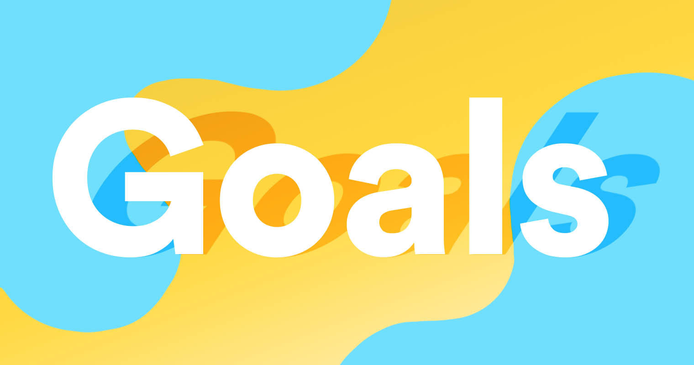
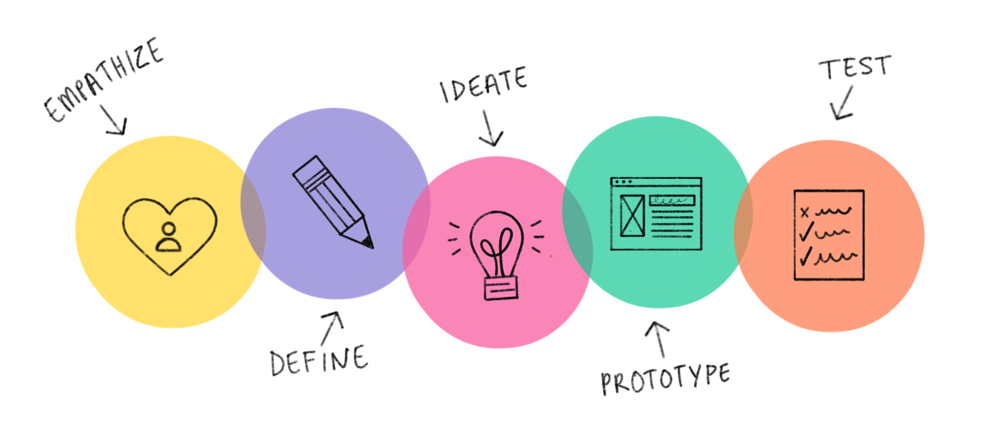

A goal is an idea of the future or desired result that a person or a group of people envisions, plans and commits to achieve. People endeavor to reach goals within a finite time by setting deadlines.

My goals are to be able to ace the following domains over the
duration of my course.
1. Team Management
Being a part of MFA DT, we are given a lot of opportunities to be involved in projects, teams and group activities. These groups include people with a lot of diversity, cultural differences and different mindsets. Working as a part of such teams will give me a lot of exposure, experience and handling. Teams and people with varying thinking processes which will also come in handy at the professional front.
2. Time Management
Goes without saying how important it is to be able to manage your time well. Given the 'n' number of assignments and classes we will be responsible for managing along with internships, it'll help me analyse and find what works best for me and what I should be doing to manage my time best and most efficiently.
3. Design Thinking

I wish to be able to develop good design thinking skills. To be able to analyse and ask the right questions as well as learn how to look at things. It is essential for me, as a designer, to understand the problem at hand with the right perspective and deliver along the right lines.
4. Technical Skills

Given that we have access to such great technologies around us, I wish to try my hand and explore opportunities around domains such electronics with Arduino or Iot or even machine learning. I would like to try these parallels of technology as well and find my interest.